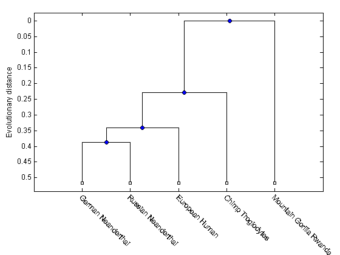
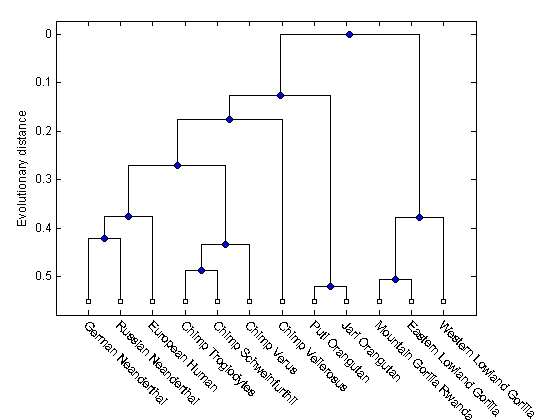
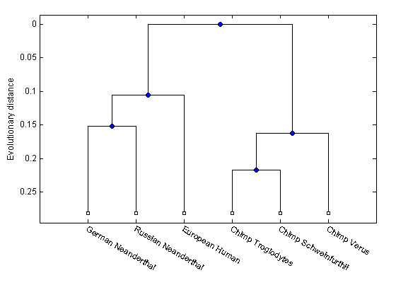
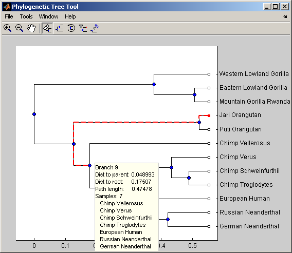

A phylogenetic tree is constructed from mtDNA sequences for the Hominidae taxa (also known as pongidae). This family embraces the gorillas, chimpanzees, orangutans and the humans.
The mitochondrial D-loop is one of the fastest mutating sequence regions in animal DNA. Therefore, useful for comparing closely related organisms. The origin of modern man is a highly debated issue that has recently been tackled by using mtDNA sequences. The limited genetic variability of human mtDNA has been explained in terms of a recent common genetic ancestry, thus implying that all modern-population mtDNAs originated from a single woman who lived in Africa less than 200,000 years.
References: "Molecular analysis of Neanderthal DNA from the northern Caucasus" Nature 404 (6777), 490-493 (2000), "Genes and languages in Europe: an analysis of mitochondrial lineages" Genome Res. 5 (1), 42-52 (1995), "Neandertal DNA sequences and the origin of modern humans" Cell 90 (1), 19-30 (1997), "Mitochondrial DNA variation and biogeography of eastern gorillas" Mol. Ecol. 10 (9), 2241-2247 (2001)
Get some data from GenBank, these are the accession codes for mitochondrial D-loop sequences that have been isolated for different hominidae species.
% Description Accession ID data = {'German_Neanderthal' 'AF011222'; 'Russian_Neanderthal' 'AF254446'; 'European_Human' 'X90314' ; 'Mountain_Gorilla_Rwanda' 'AF089820'; 'Chimp_Troglodytes' 'AF176766'; }; for ind = 1:5 seqs(ind).Header = data{ind,1}; seqs(ind).Sequence = getgenbank(data{ind,2},'sequenceonly','true'); end
Compute pairwise distances using the 'Jukes-Cantor' formula and the phylogenetic tree with the 'UPGMA' distance method. Since the sequences are not pre-aligned, seqpdist will pairwise align them before computing the distances.
distances = seqpdist(seqs,'Method','Jukes-Cantor','Alpha','DNA'); tree = seqlinkage(distances,'UPGMA',seqs)
Phylogenetic tree object with 5 leaves (4 branches)
Render the phylogenetic tree
h = plot(tree,'orient','bottom'); ylabel('Evolutionary distance') set(h.terminalNodeLabels,'Rotation',-45)
Scale our experiment up by including some more mtDNA sequences. We also get them from GeneBank.
% Description Accession ID data2 = {'Puti_Orangutan' 'AF451972'; 'Jari_Orangutan' 'AF451964'; 'Western_Lowland_Gorilla' 'AY079510'; 'Eastern_Lowland_Gorilla' 'AF050738'; 'Chimp_Schweinfurthii' 'AF176722'; 'Chimp_Vellerosus' 'AF315498'; 'Chimp_Verus' 'AF176731'; }; for ind = 1:7 seqs(ind+5).Header = data2{ind,1}; seqs(ind+5).Sequence = getgenbank(data2{ind,2},'sequenceonly','true'); end
Compute pairwise distances and the hierarchical linkage.
distances = seqpdist(seqs,'Method','Jukes-Cantor','Alpha','DNA'); tree = seqlinkage(distances,'UPGMA',seqs);
Render the phylogenetic tree
h = plot(tree,'orient','bottom'); ylabel('Evolutionary distance') set(h.terminalNodeLabels,'Rotation',-45)
Find the closet species to the 'European Human' entry (3).
names = get(tree,'LeafNames') [h_all,h_leaves] = select(tree,'reference',3,'criteria','distance','threshold',0.6); % h_all has now all the nodes within 0.6 of patristic distance to the 'European % Human' leave. % h_leaves has only the leaf nodes within 0.6 of patristic distance to (3) subtree_names = names(h_leaves)
names =
'German_Neanderthal'
'Russian_Neanderthal'
'European_Human'
'Chimp_Troglodytes'
'Chimp_Schweinfurthii'
'Chimp_Verus'
'Chimp_Vellerosus'
'Puti_Orangutan'
'Jari_Orangutan'
'Mountain_Gorilla_Rwanda'
'Eastern_Lowland_Gorilla'
'Western_Lowland_Gorilla'
subtree_names =
'German_Neanderthal'
'Russian_Neanderthal'
'European_Human'
'Chimp_Troglodytes'
'Chimp_Schweinfurthii'
'Chimp_Verus'
Reduce the tree to the sub-branch of interest
leaves_to_prune = ~h_leaves; pruned_tree = prune(tree,leaves_to_prune) h = plot(pruned_tree,'orient','bottom'); ylabel('Evolutionary distance') set(h.terminalNodeLabels,'Rotation',-30)
Phylogenetic tree object with 6 leaves (5 branches)
With view you can further explore/edit the phylogenetic tree using an interactive tool. See also phytreetool.
view(tree,h_leaves)